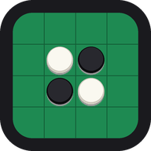

まるシマリバーシ サポート
はなれて暮らす家族と、顔を見ながらリバーシ
あそびかた
- とおくの ひとと あそぶ：ビデオ通話をしながら、はなれた相手と対戦します。はじめての相手には、LINEなどで招待リンクを送ります。相手がリンクを開くとつながります。
- となりの ひとと あそぶ：1台の端末で、2人が交互に石を置いて遊びます。
- おとなの せってい：テンポ、置ける場所の光、効果音、キャラの声、呼び名などを変えられます。
よくある質問
音が出ません
端末の音量を上げてから、「おとなの せってい」→「音の テスト（なおす）」を押してください。電話のあとなどに音が止まったときも、これで戻ります。
端末の音量を上げてから、「おとなの せってい」→「音の テスト（なおす）」を押してください。電話のあとなどに音が止まったときも、これで戻ります。
相手とつながりません
両方の端末がインターネットにつながっているか確かめ、招待リンクをもう一度送ってください。カメラとマイクの使用を「許可」にしてください（iPhone は「設定」アプリ →「まるシマリバーシ」）。
両方の端末がインターネットにつながっているか確かめ、招待リンクをもう一度送ってください。カメラとマイクの使用を「許可」にしてください（iPhone は「設定」アプリ →「まるシマリバーシ」）。
Web 版はありますか
ブラウザで遊べる Web 版もあり、アプリ版と対戦できます。招待リンクを開くと Web 版で始まります。
ブラウザで遊べる Web 版もあり、アプリ版と対戦できます。招待リンクを開くと Web 版で始まります。
お問い合わせ
ご質問・不具合のご連絡は、メールでお送りください。
うちのあじ（UCHINOAJI）
メール：info@uchinoaji.com
メール：info@uchinoaji.com